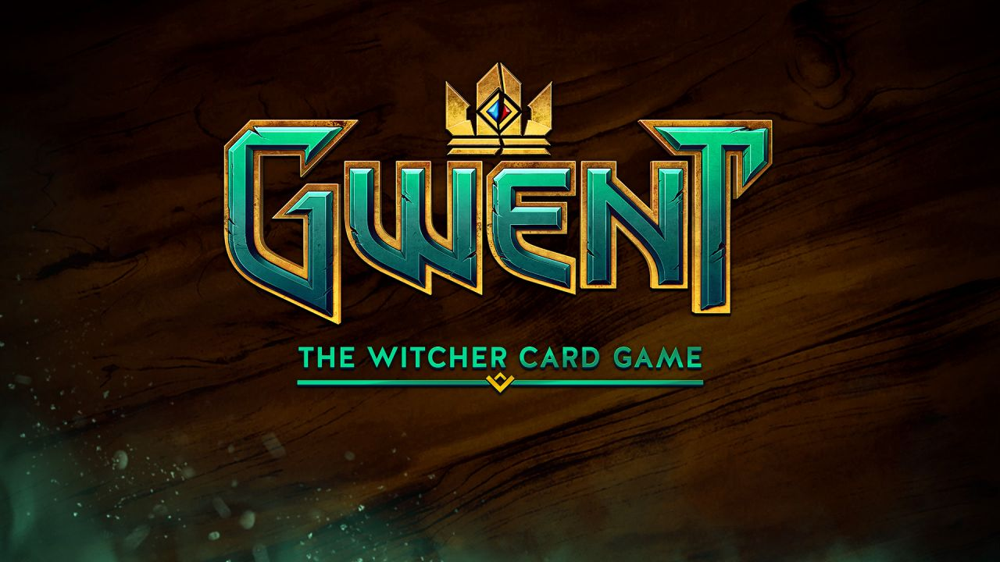
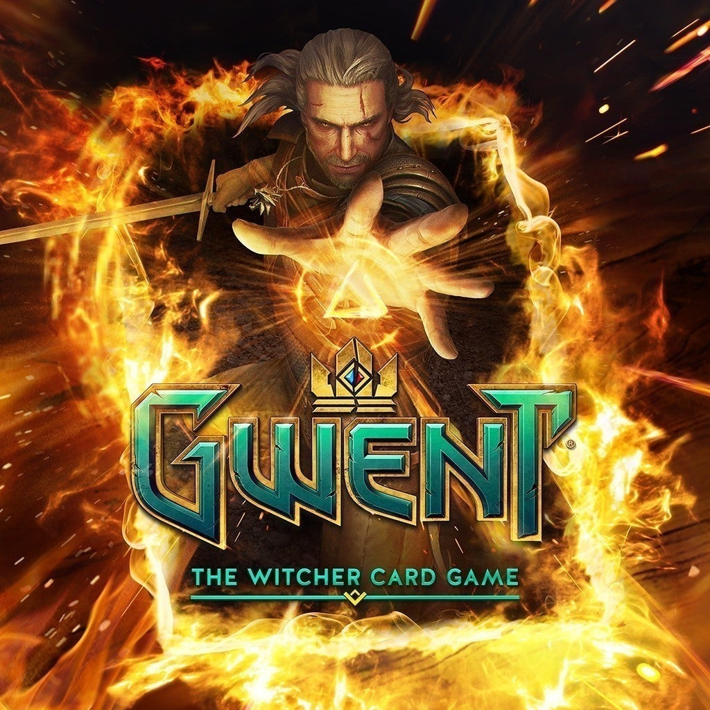
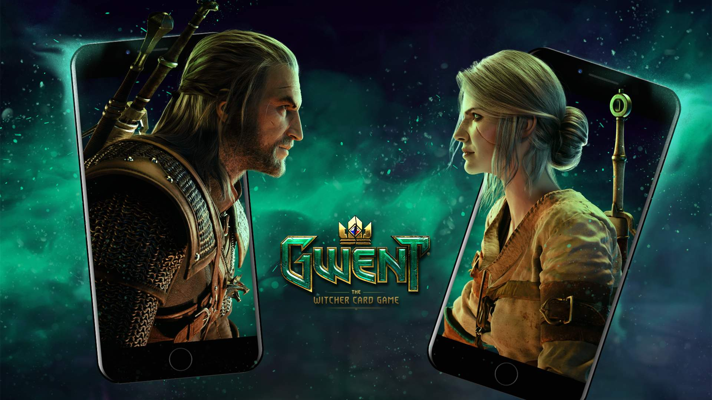
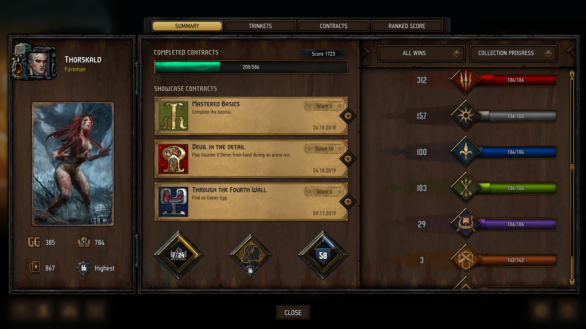
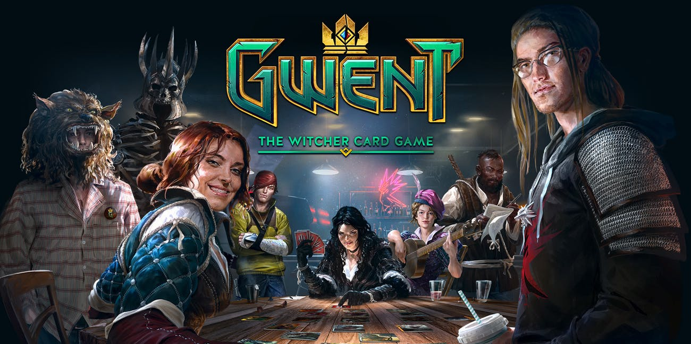

2016 yılı sonunda kapalı betasına davetiye aldığım zaman büyük heyecanla oynamaya başladığım bir oyun olmuştu Gwent. Witcher 3 Wild Hunt içinde -oyunun bir parçası ve yan quest’ler içinde- hem ünik kartları biriktirmek hem de achievement’larda eksik bırakmamak için asıl oyunu bırakıp heyecanla bol bol Gwent oynamıştım.
Gwent’in bilgisayar için ayrı bir kart oyunu haline gelebilmesi biraz sıkıntılı oldu. Magic The Gathering Arena ve Hearthstone gibi rakiplerinin olması bir tarafa Witcher 3’ün içindeki basit ama eğlenceli oyunu 400 küsur kartlık sürekli güncellenebilen bir gelir modeli haline dönüştürmek çok çok zor bir işti. Betasını oynadığım süreçte yapılması gereken çok fazla iş olduğunu görmüş ve belli bir süre oynadıktan sonra oyunu bırakmıştım.
2017 Haziran ayında açık beta sürecine geçildi ve işler iyice karmaşık hale geldi. CD Projekt Red tüm oyuncuları memnun edeyim derken Reddit’de verilen her öneriyi değerlendirmeye kalkınca işler sarpa sardı. Yapımcılar işin içinden çıkamayınca “bu böyle olmaz, herşeyi baştan yapacağız†diyerek yeni bir süreç başlattılar 2017’nin son aylarında.

Sonrasında direktör olarak Jason Slama işin başına geçti, rakip oyunları iyi inceledi, kullanıcının isteklerini görmeye çalıştı ama her istenileni yapacağım diye bir saplantısı olmadı. Gwent: The Witcher Card Game, 2018 yılı Ekim ayında piyasaya çıktı. Eksiklikler yine çoktu, belki en önemlisi iOS, Android ve MacOS sürümlerinin olmamasıydı. Bu tarz bir kart oyununu ister mobilden ister konsoldan istenilen zamanda cross-platform olarak oynanabilmesi gerekiyordu. iOS kısmındaki eksikliği geçen ay kapattılar, Android sürümü 2020 ilk çeyreğinde çıkacağı söyleniyor.

Bir süre ara verdiğim oyuna, Andrzej Sapkowski’nin Witcher kitaplarını okurken hem evreni daha iyi tanımak hem de merak ettiğim karakterlerin artistler tarafından Gwent kartlarında nasıl canlandırıldığına görebilme amacıyla ister istemez geri döndüm. Gwent için kitabın İngilizcesinde Barrel, Almancasında ise Grizu adı kullanılmış sanıyorum.
[caption id=“attachment_3349” align=“alignnone” width=“1920”] Ara ara oynayan biri için profil fena sayılmaz![/caption]
Oyunda başarılı olabilmek için en azından meta konumunda olan tüm kartları nasıl kullanılacağını (veya kendinize karşı nasıl kullanıldığını) çok iyi bilmek gerekiyor. Tek bir faction üzerine yoğunlaşıp bir deste hazırlamak en mantıklısı. Oynadıkça tecrübe kazanıp şöhret basamaklarında hızla ilerlemek mümkün. Düzenli olarak oynandığı vakit kazanılan ödüller ile tüm kartları toplamak ve eksik olanları scrap’lar ile üretmek oldukça kolay, hatta oynaması bedava olan oyunda para harcayarak kart almaya bile gerek kalmıyor.

İşte bu noktada kafama şu soru takılıyor. Oyun bu haliyle sürdürülebilir bir gelir modelini nasıl oluşturacak? Geçen ay iOS sürümü çıkınca pek çok kişi oyuna dönüş yaptı ama bu sürdürülebilir bir durum mu? Oyunun yeni eklentiler, metalar oluşturarak sürekli güncel kalabilmesi nereye kadar mümkün olacak?
[caption id=“attachment_3950” align=“alignnone” width=“1920”] Gwent çerçeveleri içerisine kendi resmini koymak…[/caption]
Bu sorular bir kenara Witcher lore dünyasını kitaplarından okuyup, Gwent kartlarındaki tasarımları ile detaylandırmak, orta ve doğu avrupa halk öykülerinden mitoloji kitaplarına aktarılan tuhaf canavarların isimlerinin etimolojik bağlantılarını araştırmak son zamanlarda en keyif aldığım işlerin başında geliyor, tadını çıkarmak lazım.